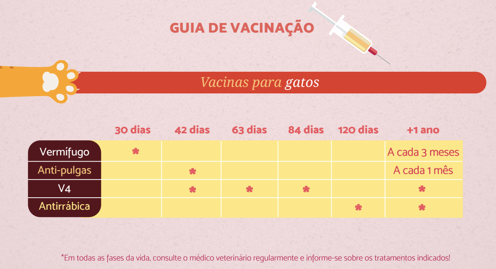

Manual do gato
Cuidados básicos ao trazer um felino à família
Gateiros de primeira viagem, os aussies prepararam algumas dicas e responderam curiosidades para auxiliar as novas famílias de gatos a cuidar bem de seus bichanos. ❤️
-
1. Um cantinho pra chamar de seu
Antes da chegada do gato, é bom que ele tenha um lugar confortável e seguro da casa para se acomodar, mas é importante saber que eles gostam de explorar lugares escuros e fechados como gavetas, armários ou caixas, por isso alguns momentos de “sumiço” serão comuns. -
2. Segurança em primeiro lugar
Justamente por esse instinto explorador dos felinos, é preciso preparar a casa visando a segurança do animal. Todas as janelas devem ser gradeadas (eles não costumam se atirar, mas entre pulos podem acontecer acidentes graves) e deve-se bloquear locais perigosos para entrar – como máquinas de lavar e ambientes muito fechados – ou subir, como armários muito altos. -
3. Visita ao Veterinário
Agende uma visita ao veterinário assim que possível, ele é o profissional capacitado para realizar avaliações clínicas completas no pet. A vacinação e Vermifugação são essenciais para proteger contra doenças, pois permite que o organismo crie defesas para reagir contra vírus, bactérias e vermes. Ele também dará conselhos específicos para a raça e a idade do gato.
 -
4. Alimentação Adequada
Escolha uma dieta de alta qualidade, adaptada à idade e às necessidades específicas do gato. Mantenha uma rotina consistente de alimentação, evitando mudanças bruscas que possam causar desconforto digestivo. -
5. Identificação e Microchip
Coloque uma coleira de identificação com um sino para alertar sobre sua presença. Considere a instalação de um microchip para garantir que, em caso de fuga, seu gato possa ser identificado e devolvido com segurança. -
6. Caixa de Areia Adequada
Proporcione uma caixa de areia limpa e acessível. A limpeza regular é fundamental para evitar que o gato evite usá-la. Considere uma caixa adicional para casas com múltiplos felinos. -
7. Enriquecimento Ambiental
Gatos são animais curiosos e ativos. Forneça brinquedos, arranhadores e locais elevados para explorar, ajudando a manter seu felino mentalmente estimulado e fisicamente saudável. -
8. Introdução Gradual a Outros Animais
Se você já tem outros animais de estimação, faça apresentações graduais e supervisionadas. Dê tempo para que todos se acostumem uns aos outros antes de permitir interações livres. -
9. Check-ups Regulares
Agende check-ups veterinários regulares para monitorar a saúde do gato ao longo do tempo. Detectar problemas precocemente pode levar a tratamentos mais eficazes. -
10. Seguro de Saúde
Considere a possibilidade de adquirir um seguro de saúde para o seu gato. Isso pode ajudar a cobrir custos inesperados de tratamentos médicos e garantir que seu felino receba o melhor cuidado possível.